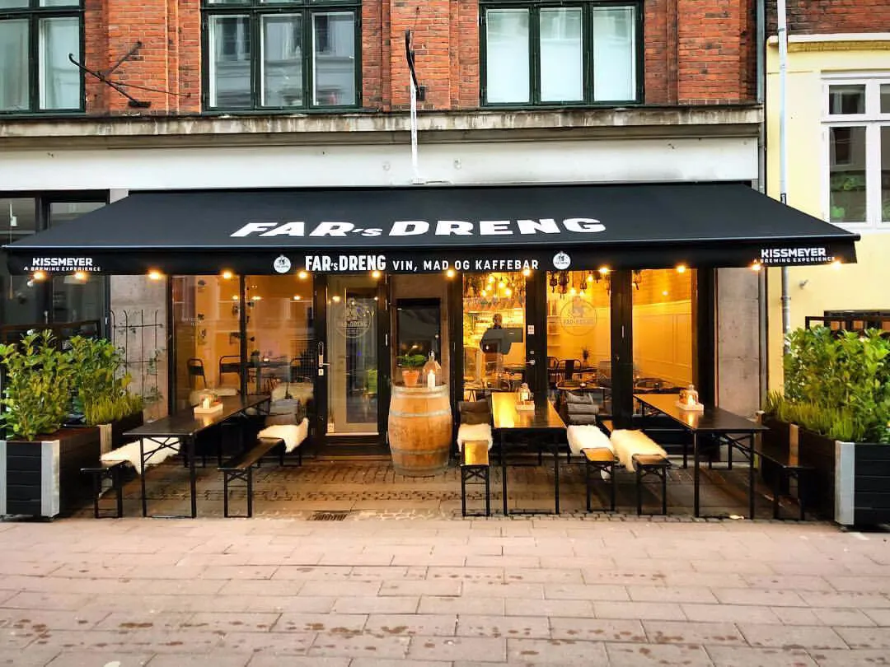

Fars Dreng
Frede foran "Fars Dreng"
Fars Dreng elsker god mad. Ikke den snobbede slags, portionsanrettet med en pincet. Fars Dreng serverer gourmet i gadehøjde. Med håndplukkede økologiske råvarer og tilberedt med rå og ufiltreret kærlighed til alt, hvad der smager godt. Og hvor bæredygtighed ikke bare handler om en doggybag til dem, der gerne vil have resten med hjem.

Caffen Fars Dreng beliggende på Rosengård 12 i indre by
Kaffe lavning